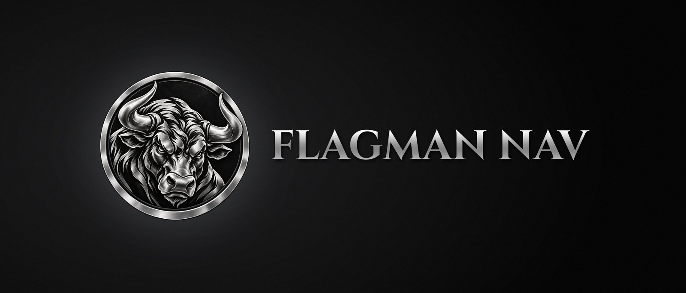
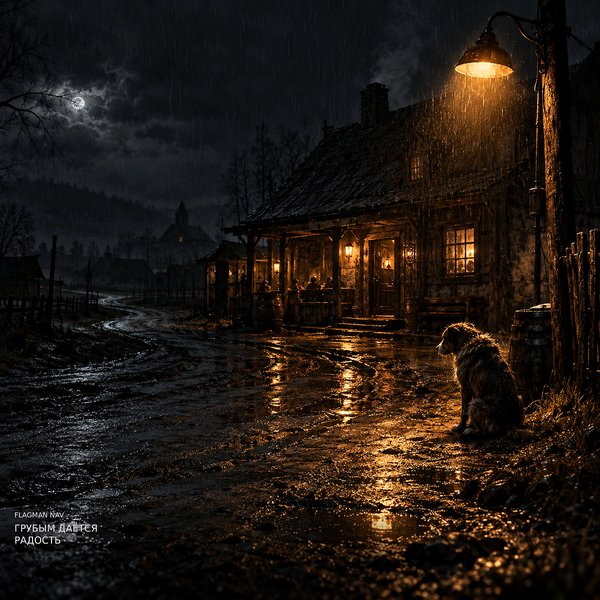

Русская поэзия без хрестоматийного глянца: металкор и альт-метал на русском — на стихи русских поэтов и на свои тексты.

Релизы
Слушать — на стриминговых площадках, ссылки на странице каждого релиза.
Скоро
- 31.10Плачет метельсингл и клип
- 07.11Мир таинственныйальбом и клип
- 11.11Запертые дорогиклип
- 14.11Пока сердце не немоклип
- 18.11Синий огоньклип
- 21.11Пляски адаклип
- 25.11Разгорелся пожар голубойклип
- 28.11Вороньёклип
- 02.12Стражи забытых имёнклип
- 05.12Край ты мой заброшенныйклип
После альбома новые клипы выходят на YouTube по средам и субботам — главами одной истории.
О проекте
Русская поэзия без хрестоматийного глянца. Есенин — с позиции не «нежного», а «грубого»: ведь «если черти в душе гнездились, значит, ангелы жили в ней».
Flagman NAV — металкор и альт-метал на русском: песни на стихи русских поэтов и на собственные тексты. Стили специфические, тяжёлые для восприятия, на любителя — но именно такая музыка помогает мне идти по жизни.
В песнях на стихи русских поэтов тексты — авторская переработка. Полностью аутентичных текстов стихотворений в треках нет: возможны сокращения, перестановки строф, изменения и авторские дополнения. Музыка и вокал создаются с помощью генеративного сервиса Suno по замыслу, текстам и заданию автора.